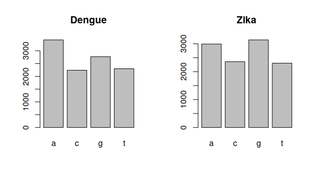
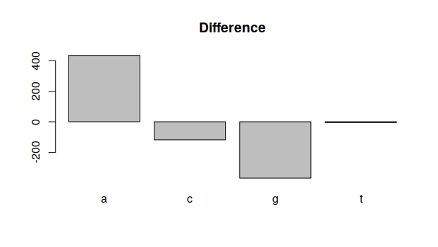

2.1.4 Comparing Gene Sequences
In the last lecture, we fetched data from NCBI and did some simple statistical analysis on the dengue virus genome. We would like to do such analyses very easily with other genomes. For this, we are going to use functions.
Furthermore, we will use these new functions two analyze two different viruses: the dengue virus (NC_001477) and the zika virus (NC_012532). Both are viruses that cause diseases in tropical regions and are transmitted by mosquitos, so it is interesting to see if we can find simple differences between the genomes.
You can download the sequences by clicking the following links: dengue and zika. It will be easier if you right click it, and choose “Save as…” and choose the Bioinformatics/workspace folder that is in the desktop.
1 Functions
Functions are operations that are composed by smaller operations. They are useful for putting together tasks that are always executed together, without being tied to a specific data.
For example, let’s say we want to print a word together with its number of characters. This can be done as follows:
word <- "Juan"
size <- nchar("Juan")
paste(word,"has",size,"letters.")The result will be Juan has 4 letters. What if we want to execute this task for any word? We do this by defining a function:
countSize <- function(word) {
size <- nchar(word)
paste(word,"has",size,"letters.")
}and it can be used with different words:
> countSize("Juan")
[1] "Juan has 4 letters."
> countSize("Dengue")
[1] "Dengue has 6 letters."We can apply this method for different operations.
2 Loading gene sequence data
The idea for this function is to make the file we are reading a function argument. Based on this file, we will build the vector data. Text that are after # are just comments and have no effect on the code.
#oad vector of nucleotides from file
readVector <- function(file){
# Read data from file
data <- read.fasta(file)
# Transform data into just a vector
vector <- c(data[[1]])
# Return vector
return(vector)
}This can be used to load the zika and dengue data we downloaded before:
dengue <- readVector("dengue.fasta")
zika <- readVector("zika.fasta")As a first test, we can compare their sizes:
> length(dengue)
[1] 10735
> length(zika)
[1] 10794their sizes are different, but not too far away from each other.
3 Showing data
Last time, we built tables from this data, and plotted a bar plot with them. This can also become a function:
showBars <- function(title,data, n) {
table <- count(data,n)
barplot(table,main=title)
}And we can see the bar plots for each distribution:
showBars("Dengue",dengue,1)
showBars("Zika",zika,1)4 Comparing data
These plots look different. However, we are just showing them one at time. How can we show both at the same time?
First, we tell R that we want to see data in a table with 1 row and 2 columns:
par(mfrow=c(1,2))and then, we plot once more our graphs:
showBars("Dengue",dengue,1)
showBars("Zika",zika,1)
These graphs have a similar shape, but the quantities of each nucleotide are different. How can we measure this difference? We can write another function.
difference <- function(data1,data2,n) {
table1 <- count(data1,n)
table2 <- count(data2,n)
barplot(table1-table2,main="Difference")
}and execute it with difference(dengue,zika,1):
 As one can see, there are more A nucleotides in the dengue genome, but less G ones.
5 Exercise
Try to show the bar plots of dengue and zika using sequences of size 2 instead. What are the differences?